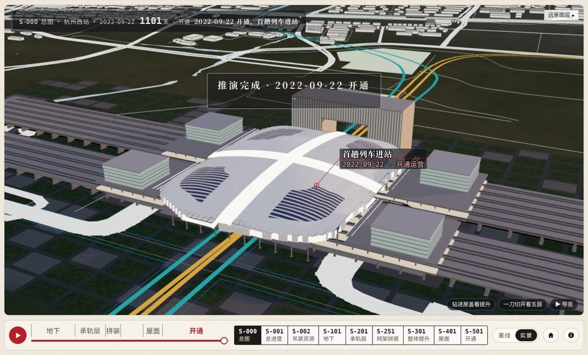

杭州西站施工推演图册 · 纪实短片
长出来的
GROWN FROM INK · HANGZHOU WEST STATION
2026-10-16 — 2026-11-23
·
63 道工序
·
2 580 个构件
·
1 101 天
这四步都能点 · 点一张卡，跳到那个世界去看看
01 · 2026-10-16

规则大阪城↗ 点开看 e3f7cdd
02 · 天守筑城图

天守筑城图↗ 点开看 build
03 · 11-06 14:00

假想码头↗ 点开看 8ca7639
04 · 11-06 15:49

杭州西站↗ 点开看 ce40c17
杭州西站
11-08 14:33
·
AI 效果图，别混进图纸里。
1
我（就 1 个人）
刚喝一口水，又递进来新图
最快 1 小时 · 41 版新图
平均每 1 分半就敲一次门
11-08 12:16
上一张还没看完，下一张已经拍在桌上
0
张工程图纸 + 三维施工推演
传统人工估量：约 50 人团队 · 数月工期
实际到场：0 人
结构/土建 ×12
施工图画图 ×15
BIM/三维 ×8
动画渲染 ×6
交互程序 ×5
审图校核 ×4
活图纸 · 平面总图联动
自动演示
0
次改动
总图
ce40c17
GIT · CST
11-06 15:49
画面已解锁 · 拖拽左侧 3D，或直接点右侧图纸飞到现场